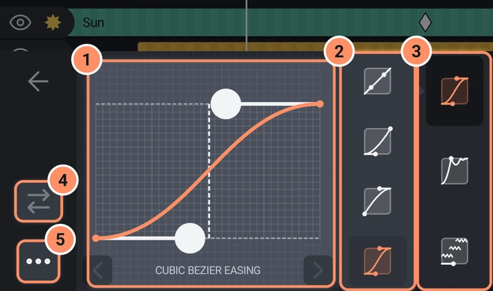

কীফ্রেম এবং ইজিং
যেকোনো মানকে সময়ের সাথে অ্যানিমেট করুন, কীফ্রেম সরান ও পুনঃসময় করুন, ইজিং কার্ভ দিয়ে মোশনকে আকৃতি দিন।
এই পেজে
একটি কীফ্রেম এক মুহূর্তে একটি প্রপার্টির মান সংরক্ষণ করে। দুটি কীফ্রেমের মধ্যে অ্যাপটি মধ্যবর্তী মানগুলো গণনা করে, যা অ্যানিমেশন তৈরি করে। প্রায় প্রতিটি মান অ্যানিমেট করা যায়: অবস্থান, আকার, ঘূর্ণন, টিল্ট, স্কিউ, অপাসিটি, কালার, স্ট্রোক, বর্ডার ও শ্যাডো সেটিংস, শেপ প্যারামিটার, ক্যামেরা ও মডেল সেটিংস, ভলিউম এবং ইফেক্টের সেটিংস।
কীফ্রেম যোগ ও সরানো
- একটি লেয়ার নির্বাচন করুন এবং একটি প্যানেল খুলুন, যেমন ট্রান্সফর্ম, অপাসিটি বা ইফেক্ট।
- প্লেহেডকে পছন্দের সময়ে রাখুন।
- প্যানেলের বাম কলামে কীফ্রেম যোগ করুন বোতামটি (একটি ডায়মন্ড) ট্যাপ করুন। প্লেহেড যখন একটি কীফ্রেমের উপর থাকে তখন এটি কীফ্রেম সরান-এ পরিণত হয়।

জেনে রাখুন:
- একবার একটি প্রপার্টিতে কীফ্রেম থাকলে, যে সময়ে কোনো কীফ্রেম নেই সেখানে এটি পরিবর্তন করলে আপনার জন্য সেখানে একটি কীফ্রেম তৈরি হয়। আপনাকে শুধু প্রথমটি হাতে যোগ করতে হবে।
- একটি প্রপার্টির শেষ কীফ্রেম সরালে এটি সেই শেষ মানেই স্থির থাকে।
- যে সেটিং অ্যানিমেট করা যায় না তখন কীফ্রেম বোতামটি ধূসর থাকে। টেক্সট কন্টেন্ট ও আকার, এবং ফ্রিহ্যান্ড ড্রয়িং-এ কীফ্রেম নেই। পয়েন্ট দিয়ে আঁকা শেপের নিজস্ব শেপ কীফ্রেম আছে: দেখুন শেপ, ড্রয়িং এবং মাস্ক।
- একাধিক সারি আছে এমন প্যানেলে (শেপ অপশন, ফ্রেম ও শ্যাডো, ক্যামেরা অপশন), নির্বাচিত সারিটিই কীফ্রেম গ্রহণ করে। ট্রান্সফর্ম-এ, সরান একসাথে X, Y এবং Z অ্যানিমেট করে; সাইজ, ঘোরান, 3D রোটেশন (কম্পিউটারে টিল্ট), স্কিউ এবং পিভট আলাদা। পিভট-এর কীফ্রেম অবস্থানেরও কীফ্রেম দেয়, তাই লেয়ার যেখানে আছে সেখানেই থাকে।
- ইফেক্ট-এ, একটি খোলা ইফেক্টের প্রতিটি প্যারামিটারের নিজস্ব কীফ্রেম থাকে। প্যারামিটারের নামটি লক্ষ্য করতে ট্যাপ করুন।
চালানোর সময় কীফ্রেম রেকর্ড করুন
প্লে চাপুন এবং প্রিভিউ চলার সময় ক্যানভাসে লেয়ার টেনে আনুন অথবা ট্রান্সফর্ম-এ কোনো প্রপার্টি বদলান। পরিবর্তনটি কীফ্রেম হিসেবে রেকর্ড হয়, এমনকি যে প্রপার্টিতে এখনো কোনো কীফ্রেম নেই তাতেও। রেকর্ডিং শেষ করতে টানা ছেড়ে দিন; একটি আনডু পুরো রেকর্ডিং সরিয়ে দেয়। অ্যাপ গতি অনুসরণ করতে প্রয়োজনীয় কীফ্রেমগুলো রেখে দেয়।
প্লে চেপে ধরে রাখুন, এক, দুই বা তিন সেকেন্ডের কাউন্ট-ইন এবং 0.25x, 0.5x বা 1x প্রিভিউ স্পিড বেছে নিতে। কম্পিউটারে আপনি প্লে-তে রাইট-ক্লিকও করতে পারেন। 1x-এর কমে শব্দ বন্ধ থাকে; এক্সপোর্টে কোনো প্রভাব পড়ে না। কীফ্রেম যোগ করার বোতাম চেপে ধরুন বা তাতে রাইট-ক্লিক করুন, রেকর্ডিংয়ের সময় ওভাররাইট চালু করতে, যা রেকর্ড করা অংশে থাকা কীফ্রেমগুলো বদলে দেয়।
টাইমলাইনে কীফ্রেম
কীফ্রেমগুলো একটি লেয়ারের বারে ছোট ডায়মন্ড হিসেবে দেখায়। নির্বাচিত লেয়ারে সেগুলো বড় হয়, এবং প্লেহেডের নিচেরটিতে একটি রিং থাকে। যখন একটি প্রপার্টি বা ইফেক্ট খোলা থাকে, শুধু তার ডায়মন্ডগুলো দেখায়; টুল গ্রিড দেখানো থাকলে লেয়ারের সব ডায়মন্ড দেখায়।
- তাদের মধ্যে লাফ দিন। প্লে বারে পিছিয়ে যান এবং সামনে যান নির্বাচিত লেয়ারের কীফ্রেমে থামে (যখন একটি খোলা থাকে তখন শুধু খোলা প্রপার্টি বা ইফেক্টের)।
- একটি কীফ্রেম সরান (পুনঃসময়)। নির্বাচিত লেয়ারের একটি ডায়মন্ড চেপে ধরে রাখুন যতক্ষণ না সেটি উঠে আসে, তারপর পাশে টানুন। এটি প্লেহেড, বুকমার্ক, অন্য লেয়ারের প্রান্ত এবং অন্য কীফ্রেমে স্ন্যাপ করে, আর ক্লিপের ভেতরেই থাকে। একবার সরানো মানে এক ধাপ আনডু। কোনো প্রপার্টি বা ইফেক্ট খোলা না থাকলে সেই ফ্রেমে লেয়ারের সব কীফ্রেম একসাথে সরে; কোনোটি খোলা থাকলে শুধু তার কীফ্রেমগুলো সরে। দ্বিতীয় আঙুল রাখলে সরানো বাতিল হয়।
- স্পিড-এর নিজস্ব কীফ্রেম নেই। সময়ের সঙ্গে এটি বদলাতে স্পিড কার্ভ ব্যবহার করুন: দেখুন ছবি, ভিডিও এবং স্পিড।
একটি একক কীফ্রেমের জন্য কপি ও পেস্ট নেই। কীফ্রেম পুনরায় ব্যবহার করতে, পুরো লেয়ার কপি করুন (সেগুলো এর সাথে যায়), একটি ইফেক্ট কপি করুন, অথবা একটি প্রিসেট সংরক্ষণ করুন।
ইজিং: মোশনের আকৃতি
ডিফল্টভাবে একটি মান এক কীফ্রেম থেকে পরেরটিতে সরলরেখায় চলে। ইজিং পরিবর্তন করে মাঝখানে এটি কত দ্রুত চলে।
একটি প্যানেলে ইজিং (কার্ভ বোতাম) ট্যাপ করুন। পরের কীফ্রেমে শেষ হয় এমন সেগমেন্টের জন্য একটি গ্রাফ খোলে। প্লেহেডকে প্রপার্টির দুটি কীফ্রেমের মধ্যে থাকতে হবে; অন্যথায় অ্যাপ প্রথমে কীফ্রেম যোগ করতে বলে।

- কার্ভ পরিবর্তন করতে গ্রাফের হ্যান্ডেলগুলো টেনে আনুন। একটি ড্যাশড লাইন দেখায় সেগমেন্টের ভিতরে প্লেহেড কোথায়, এবং গ্রাফের নিচের তীরগুলো পূর্ববর্তী বা পরবর্তী সেগমেন্টে যায়।
- এক ধরনের কার্ভ বেছে নিন:
| ধরন | এটি যা করে |
|---|---|
| কিউবিক বেজিয়ার ইজিং | দুটি হ্যান্ডেল সহ একটি মসৃণ কার্ভ। প্রিসেট: Linear, ease-in, ease-out, ease-in-out। |
| বাউন্স | শেষে বলের মতো বাউন্স করে। |
| ইলাস্টিক | ওভারশুট করে এবং স্প্রিংয়ের মতো ফিরে আসে। |
| সাইক্লিক | একটি তরঙ্গ পুনরাবৃত্তি করে। |
| র্যান্ডম | লাফিয়ে লাফিয়ে এলোমেলো নড়াচড়া। |
| স্টেপস | মসৃণভাবে চলার বদলে ধাপে ধাপে লাফায়। |
| ইলাস্টিক স্টেপস | ধাপগুলো যা ওভারশুট করে। |
- কার্ভটি উল্টান কার্ভকে মিরর করে (Linear-এর জন্য উপলব্ধ নয়)।
- আরও-এ আছে কার্ভ কপি এবং কার্ভ পেস্ট (বর্তমান সেগমেন্টে পেস্ট করুন), সব কীফ্রেমে কার্ভ প্রয়োগ করুন, এবং ওভারশুট চালু করুন বা ওভারশুট বন্ধ করুন (শুধু Cubic Bezier)। ওভারশুট গ্রাফ প্রশস্ত করে যাতে হ্যান্ডেলগুলো শুরুর ও শেষের মান ছাড়িয়ে যেতে পারে, যা মোশনকে তার লক্ষ্যের বাইরে দোলা দিয়ে ফিরিয়ে আনে।
রেডিমেড অ্যানিমেশন
প্রতিটি অ্যানিমেশন হাতে তৈরি করতে হবে না। এগুলো সবই সাধারণ কীফ্রেম বা ইফেক্ট লেখে যা আপনি পরে সম্পাদনা করতে পারেন।
- অ্যানিমেট (প্রিভিউয়ের নিচে ডানদিকে গোলাকার বোতাম): ইন, আউট এবং লুপ অ্যানিমেশন। দেখুন ট্রানজিশন এবং অ্যানিমেশন।
- দুটি ক্লিপের মধ্যে ট্রানজিশন।
- ক্যামেরা মুভস যেমন পুশ ইন এবং অরবিট। দেখুন ক্যামেরা লেয়ার এবং 3D।
- মুভ ইফেক্ট যেমন অটো-শেক, অসিলেট, সুইং এবং স্পিন: দেখুন ইফেক্ট ব্যবহার করা।
- প্রিসেট যা আপনি অন্য লেয়ার থেকে সংরক্ষণ করেছেন।